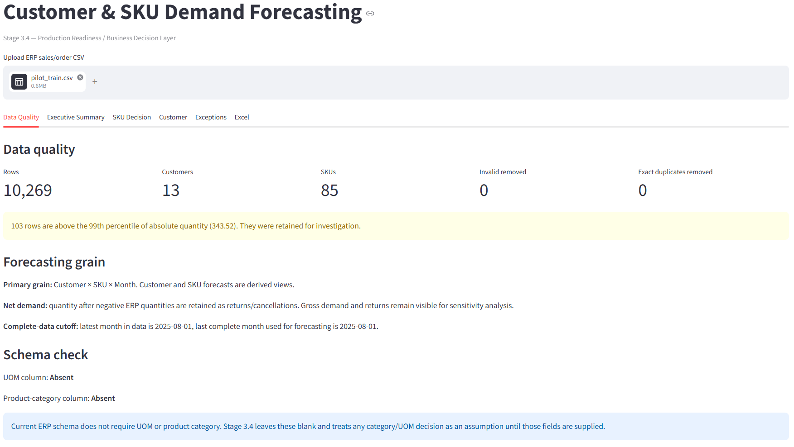
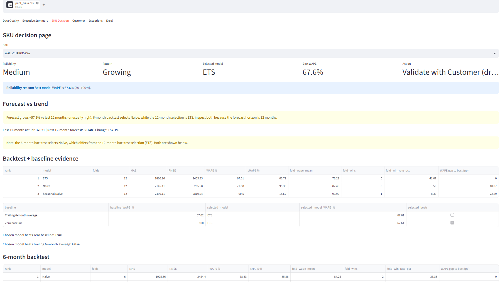
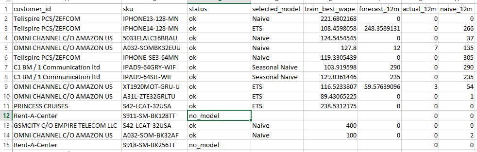

The goal
A wholesale distributor of consumer electronics across Latin America was making stocking decisions on 4,307 SKUs using a spreadsheet and intuition. Their ERP held 4.5 years of order history. Nobody had ever asked the data a simple question:
Which SKUs can actually be forecast, and which ones can't?
That is the entire brief. Not "build a forecasting model." Build a tool that tells an analyst which SKUs they can trust a forecast on — and which ones need a phone call to the customer instead. That distinction is the whole project.
The data
Real ERP export. Not synthetic, not scraped, not a Kaggle competition. Real order lines with real mess in them.
| Metric | Value |
|---|---|
| Raw order lines | ~290,000 |
| Clean order lines after filtering | 84,741 |
| Distinct customers | 872 |
| Distinct SKUs | 4,307 |
| Date range | 2023-01-02 to 2026-08-31 |
| Total net units | ~5.78M |

Cleaning — what the first hour actually looked like
Roughly 21% of raw rows were not sales. They were discount adjustments, returns, and cancellations posted as negative-quantity transactions. If you naively sum the quantity column, you get a number that looks like demand but isn't. Every downstream forecast is wrong if this step is wrong.
Before any model sees the data, the pipeline does three things:
- Separates gross demand from returns. Net demand (gross minus returns) is the forecast target. Gross demand and returns remain visible for sensitivity analysis.
- Removes exact duplicates. ERP exports frequently double-post. Detected and removed.
- Establishes a completeness cutoff. The last month in the data is often partial. The pipeline uses the last complete month as the forecasting anchor. This sounds trivial. It isn't. Forecasting off a partial month produces a fake trend and a fake seasonality signal, and both errors propagate into every SKU.
After cleaning, the app reports its own data quality. On the pilot training set, it retained 103 outlier rows for investigation rather than silently dropping them. Silent outlier removal is how forecasters lie to themselves.
The 0.27% finding
Of the 872 customers and 4,307 SKUs, roughly 34,031 customer × SKU pairs ever had positive demand. The question is: how many have enough monthly history to forecast?
| Filter | Pairs remaining | % of total |
|---|---|---|
| Any positive demand ever | 34,031 | 100% |
| At least 12 months of monthly history | 92 | 0.27% |
| At least 24 months of monthly history | 5 | 0.015% |
And on the SKU side: 79% of SKUs had fewer than 6 months of activity.
Less than one-third of one percent of customer × SKU pairs have enough monthly history for a classical time-series model to even attempt a forecast. Fifteen thousandths of a percent have enough history for a model to estimate seasonality with confidence. This is not an anomaly. This is what wholesale distribution actually looks like.
A reseller orders a bulk shipment in March, another in July, nothing for four months, then a spike when a new SKU launches. That is not monthly demand. That is a reorder-probability problem wearing a time-series costume.
The insight the project produced is not a forecast. It is this:
This dataset has a small forecastable core and a large unforecastable tail, and treating them the same is the actual risk.
Building the engine
Three models, selected per SKU via expanding-window cross-validation:
- Naive — repeat last year's monthly demand.
- Seasonal Naive — repeat the same month last year.
- ETS — exponential smoothing with additive trend and seasonality.
The pipeline is Pandas + Statsmodels + a custom reliability layer. The UI is Streamlit. The output is a decision workbook in Excel. 38 pytest tests cover the pipeline end-to-end.
The reliability and sensitivity layer
A forecast number alone is not a decision. So the app produces, for every forecastable SKU, a stack of diagnostics that tell the analyst how much weight to put on the number. These turned out to be the most useful parts of the whole system.
Reliability tiers with written reasons
Every SKU gets High / Medium / Low, plus a plain-English reason. Examples from the pilot:
- "Best model WAPE is 67.6% (50–100%)." → Medium
- "Best model WAPE is 178.7% (≥100%)." → Low
- "History is only 16 months (<24)." → Low
- "Demand is intermittent (≥40% zero-demand months)." → Low
In the pilot, 84 of 92 pairs received Low reliability. That is not a bug. That is the app correctly reporting that most of the data does not support a confident monthly forecast.
Model separation
For each SKU, the app reports the relative WAPE advantage the selected model has over the next-best model. On WALL-CHARGR-25W, the selected model (ETS) has a 13.0% relative WAPE advantage over the runner-up (Naive). That is meaningful but not overwhelming — and the app says so. A 13% advantage is worth selecting ETS, but it is not worth betting the warehouse on ETS alone. That is why the reliability tier is Medium, not High.
Selection robustness — outlier and net-vs-gross sensitivity
For every SKU, the app re-runs model selection under three conditions:
- Base model — as-is.
- Outliers capped — flagged outlier months (calendar-month median × 3) are winsorized and selection is rerun.
- Gross demand — the model is refit on gross demand instead of net demand (returns not subtracted).
If the selected model changes under any of these, the app reports: "Selected model changes when SKU-specific outliers are capped."
For WALL-CHARGR-25W:
| Check | Result |
|---|---|
| Flagged outlier months | 2025-05, 2025-07 |
| Units in flagged months | 9,416 |
| Base model | ETS |
| Without outliers | ETS |
| Gross demand | ETS |
All three re-runs selected ETS. The model choice is robust to those sensitivities on this SKU. That means the ETS selection is not an artifact of two crazy months. It is the model genuinely preferring trend-following on this series.
Forecast-vs-trend sanity warnings
Independent of backtest metrics, the app compares the forecast against the last 12 months of actuals and fires warnings for:
- Cliff check — forecast is ≥90% below the last 12 months.
- Spike check — forecast is ≥100% above the last 12 months.
- Flat-vs-trend — forecast is flat but the observed trend is growing or declining.
- Model-horizon disagreement — 6-month and 12-month backtests select different models.
On WALL-CHARGR-25W, two warnings fired:
- "Forecast grows +57.1% vs last 12 months (unusually high)."
- "6-month backtest selects Naive, while the 12-month selection is ETS; inspect both because the forecast horizon is 12 months."
Both warnings were correct. The model over-forecast by 155% on the holdout. The app flagged it before the analyst ever looked at the number.

WALL-CHARGR-25W. Reliability: Medium. Pattern: Growing. Selected model: ETS. Best WAPE: 67.6%. Action: Validate with Customer. Two sanity warnings fired, both of which proved correct in the holdout.The validation — the finding that changed the story
I tested the app on 92 forecastable customer × SKU pairs. Training window: 2023-01 to 2025-08. Holdout: 2025-09 to 2026-08. Twelve months held back, never seen by the model.
Pairs attempted: 92
Pairs with a forecast: 57
Pairs with non-zero holdout: 31
Model beats naive on: 18 of 31 → 58.1% win rate
Median |% error| forecast: 208.4%
Median |% error| naive: 1900.0%
Volume-weighted WAPE (forecast): 178.7%
Volume-weighted WAPE (naive): 65.5% ← naive is 3× better on volume
Two readings, both true:
Reading 1 (favourable): the model beat naive on 58% of pairs. Median error dropped from 1900% to 208%. That is a 9× improvement.
Reading 2 (honest, and this is the true one): volume-weighted WAPE — which is what actually matters for stock decisions — is 178.7% for the model vs 65.5% for naive. On the SKUs that carry the business, the model is 3× worse than "just repeat last year."
The 58% win rate counts pairs equally, including 20-unit tail SKUs. The volume-weighted number counts the big SKUs, which is where stockouts and overstock actually cost money.

validation_results.csv — top 15 pairs by holdout volume, sorted by actual_12m descending. Every top-volume pair is OMNI CHANNEL C/O AMAZON US. Forecast > actual > naive everywhere: the model over-forecast the most, naive the least.What went wrong
Look at the top 10 pairs by holdout volume. Every single one is OMNI CHANNEL C/O AMAZON US. That is the concentration problem.
For the top SKU, WALL-CHARGR-25W:
| Quantity | Value |
|---|---|
| Forecast (ETS) | 58,148 |
| Actual holdout | 22,791 |
| Naive (last 12m of training) | 37,021 |
The ETS model saw growth in the training window, extrapolated it, and forecast 58k. Actual was 22.8k — a 155% over-forecast. Naive said 37k — a 62% over-forecast. Both wrong, both over. Naive was closer.
Same pattern on the next SKU. R400-SOM-BDFEGA: forecast 52k, actual 17k, naive 11k. Both over, naive closer.
Why is naive closer than ETS here? Because ETS with additive trend on lumpy wholesale data extrapolates noise. When the training window contains a big spike — a bulk Amazon order, a launch stocking, a promotion — ETS thinks that spike is the trend and projects it forward. Naive just says "repeat last year" and stays grounded.
This is a real, documented, common failure mode of trend-following models on wholesale data. It is not a bug in the code. It is the physics of the problem.
What the app got right
The app correctly flagged the SKUs where the model would fail. It did not confidently produce a wrong number. It produced a number and a warning.
- On
WALL-CHARGR-25W: Reliability: Medium, Selected model: ETS, Action: Validate with Customer, plus the two sanity warnings above. - Across the portfolio: 84 of 92 pairs assigned Low reliability, most with the reason "Best model WAPE is ≥100%" or "History is only N months (<24)."
- Action label on every one of those pairs: "Validate with Customer."
The sentence I would walk into an interview with
The most important output of this forecasting app was telling the user not to trust the forecast without validation. Not "my model beat naive." Not "look at my MAPE." The honest sentence: I built a forecasting tool, I validated it on real data, the model lost to the naive baseline on the SKUs that matter, and the app's reliability layer correctly identified the failure mode.
Executive decision summary — the business view
The top of the app is a one-screen view for a supply chain lead:
| Action | Count (pilot) |
|---|---|
| Validate | 85 |
| Increase Stocking | 0 |
| Evaluate for Reduction | 0 |
| Maintain Current Stocking | 0 |
Eighty-five SKUs need a customer conversation before anyone orders anything. Zero SKUs get an automatic "increase stocking" or "reduce stocking" recommendation. That is the correct output for this dataset — the app is telling the business that almost nothing in this portfolio is forecastable enough to act on without human validation.
The app is also explicit about what it cannot say: "No SKU currently receives Evaluate for Reduction. This is a demand signal only; physical overstock cannot be asserted without on-hand inventory." That is a boundary, and it is stated, not hidden.
The workbook — Excel as a live decision layer
The output is not a CSV dump. It is a decision workbook with live formulas, a pivot-table guide, and a documented methodology sheet.
Annualization test with data cut at June
Instead of blindly annualizing YTD × (12 / months_elapsed), the app shows what the annualized number would have been at the June cutoff, side by side with the latest.
| Customer | Annualized (latest) | Annualized (June) | Change % |
|---|---|---|---|
| OMNI CHANNEL C/O AMAZON US | 122,322 | 105,918 | +15.5% |
| Telispire PCS/ZEFCOM | 691.5 | 912 | −24.2% |
| Horizon Shop | 391.5 | 486 | −19.4% |
| C1 BM / 1 Communication ltd | 309 | 412 | −25.0% |
Those swings are a signal, not noise. They mean the annualized answer depends heavily on which cutoff you pick, which means neither number should be treated as final.
Customer × SKU YTD with live formulas
The workbook ships with live formulas, not just static values. The Customer_SKU_YTD sheet computes:
YTD_Quantity_Live =SUMIFS(tblMonthlyDemand[quantity], tblMonthlyDemand[customer_id], A2, tblMonthlyDemand[sku], B2, tblMonthlyDemand[year], YEAR(G2), tblMonthlyDemand[month], "<="&G2)
Annualized_Quantity_Live =IF(M2=0, 0, M2 / MONTH(G2) * 12)
Prior_Full_Year_Live =SUMIFS(..., tblMonthlyDemand[year], YEAR(G2) - 1)
YoY_%_Live =IF(O2<=0, NA(), (M2 - O2) / ABS(O2))
Every downstream metric recalculates when the underlying tblMonthlyDemand table is refreshed. This is not "Excel as a viewer." It is "Excel as a live calculation layer with documented methodology." A Formula_Guide sheet lists the canonical formula for every metric so an auditor can trace any number back to source.
Exceptions
Every month × SKU is screened for spikes (≥5× same-calendar-month median) and drops (≤25% of same-calendar-month median), with intermittent demand handled separately (spike/drop rules suppressed when ≥40% of months are zero). The Exceptions sheet is the analyst's work queue. Hundreds of exceptions across the portfolio. That is the correct output — the app's job is not to hide the mess, it is to make the mess legible.
Bugs found along the way
Eight bugs were worth writing down. Each one cost more than an hour.
Excel Live-Formula Concatenation Bug
A formula referenced the wrong cell range and produced "142" instead of "N2" when the workbook was programmatically regenerated. Cause: string concatenation of an integer column label. The column index 142 was being concatenated into the formula string where the cell reference N2 was intended.
Lesson: never concatenate integer column labels into formula strings — convert to letter notation explicitly and unit-test the emitted formulas.
Three Empty Sheets in the Workbook Export
Customer_Forecast, Customer_SKU_Forecast, and June_Annualization_Test were being created but populated only when a specific path executed. On a different code path, the sheets existed with no rows and no headers — and the downstream pivot tables and SUMIFS ranges broke on the missing columns.
Lesson: force-write the header row on every sheet, even when the body is empty, so downstream formulas never touch a blank range.
Stale Formula_Guide References
The guide listed formulas that referenced an older schema. Once the sheet names or column positions changed, the documented formulas no longer matched the actual workbook.
Lesson: generate the guide from the same dict that generates the workbook, so they cannot drift.
Exception Noise from Intermittent SKUs
SKU_26 produced 21 "Demand Drop" rows in a single month because the calendar-month median was zero and any nonzero value looked like a spike while every zero looked like a drop. The exceptions sheet was drowning in false positives for a SKU with genuinely sporadic demand.
The fix: suppress spike/drop rules entirely when ≥40% of months are zero, and report "intermittent demand" as a single labelled row with the zero-month count.
Lesson: spike/drop detection is meaningless when the median is zero. Detect the zero-heavy pattern first and switch rules accordingly.
pyarrow Mixed-Type Error in the Exceptions DataFrame
The Exceptions sheet had a column that was sometimes int, sometimes string, sometimes pd.NA. pyarrow refused to serialize it when the workbook export went through Arrow.
Lesson: force exception columns to string at write time and document the transformation — Arrow's strictness is a feature, not a bug, but you have to meet it.
Action Layer and Trend Check Disagreeing
A SKU could simultaneously get "Maintain Current Stocking" from the action layer and "Review" from the trend check. Two rules firing on different criteria, and disagreeing on the same SKU in the same report. That is the kind of contradiction that destroys trust in the tool the first time a supply chain lead sees it.
Fix (Option A): if the trend check says Review, force the action to Validate. The stricter rule wins.
Lesson: when two rules disagree, always promote the more conservative one. A forecast you can't trust must never be labelled "Maintain."
Stale Virtualenv After Moving the Project from C: to D:
The venv had absolute paths baked into it. After moving the project to a different drive, imports resolved against the old path and failed silently in some cases and loudly in others.
Lesson: recreate the venv after any drive change. Nothing more exotic than that.
six_month_selected NameError in portfolio.py
The variable was only defined inside one branch of the model-comparison block. When the block took a different branch, the later reference threw NameError at runtime.
Lesson: initialize conditional variables to None at function scope and check before use. Never rely on a variable only existing in one branch.
None of those are interesting in isolation. Together they are the difference between a script that works on your laptop and a tool someone else can run.
What this does not mean
Three things this project is not claiming:
- It does not mean the app is broken. The app correctly assigned Medium/Low reliability. It fired the model-horizon disagreement warning. It returned "Validate with Customer" as the action. If the app had confidently returned a number with High reliability, that would be a bug. It didn't.
- It does not mean the synthetic-data demo was wrong. On synthetic data with stable seasonality, Seasonal Naive won and the reliability tiers correctly sorted the SKUs. On lumpy wholesale data, ETS over-extrapolates and the tiers correctly sort into Low. Both findings are correct for their respective datasets.
- It does not mean the app should be rebuilt. A tool that says "I'm not sure about this SKU — validate before acting" is more valuable than one that confidently says the wrong number. The rebuild would be to add reorder-probability modelling for the 99.73% of pairs where monthly time-series is the wrong frame. That is a v2, not a v1 fix.
Recommendation
For the 33,939 customer × SKU pairs that cannot be forecast monthly, monthly time-series is the wrong tool. The right recommendations are:
- Customer reorder-probability modelling. Instead of predicting how much a customer will order next month, predict whether they will order. The right output is a probability and a reorder window, not a point forecast.
- Aggregate customer-level forecasting. Roll the SKU-level chaos up to the customer level. A customer that orders 400 SKUs irregularly still has a fairly stable total monthly demand. Forecast the aggregate, allocate down proportionally.
- New-SKU launch curves. For SKUs with under 6 months of activity, you cannot forecast monthly demand. You can forecast against a launch curve — either a category-level curve or a curve from a comparable prior SKU.
For the 92-pair forecastable core: keep the three-model selection with expanding-window backtest, but add two guardrails before the forecast is used downstream:
- Cap the model's trend extrapolation when the SKU's recent 3-month volume is below the trailing-12-month average. This specifically prevents the
WALL-CHARGR-25Wfailure mode. - Force "Validate with Customer" whenever the 6-month and 12-month backtests select different models. The disagreement is the signal.
Both of those guardrails are already partially present in the app (the disagreement warning fires today). They should be promoted to hard rules.
Where it stands now
The forecasting engine ships as a Streamlit application and an audit-ready Excel workbook. It handles cleaning, monthly aggregation, model selection, backtesting, reliability tiering, sanity checks, sensitivity re-runs, and export in a single pass. The pilot validated it on real data, and the validation produced an honest result that the app is designed to surface rather than hide.
Engineering summary
The finding is the deliverable. "0.27% of pairs are forecastable" is a more useful sentence than any forecast number this project produced. That sentence changes what the business does next. The forecast numbers change what the business orders next month. The first is strategy. The second is tactics.
Honest metrics beat flattering metrics. I could have reported "58% win rate" and stopped. That number is true and it flatters the model. But the volume-weighted WAPE is the number a supply chain lead needs to make a decision, and that number says the model is 3× worse than a naive baseline on the SKUs that matter.
A forecasting app's most important feature is knowing when not to forecast. This project started as "build a demand forecasting engine." It ended as "build a tool that tells you which demand is forecastable." Those are different products, and the second one is more useful.
The diagnostics are the product. If I had shipped only the forecast numbers, this pilot would have looked like a disaster. If I had shipped only the win rate, it would have looked like a triumph that the volume number contradicts. What I actually shipped was a stack of diagnostics that told the analyst, in plain language, which numbers to trust and which to validate.
Want to see the voice agent log? Read Voice AI · Log 03 →
Full case study: Demand Forecasting Engine — Case Study →